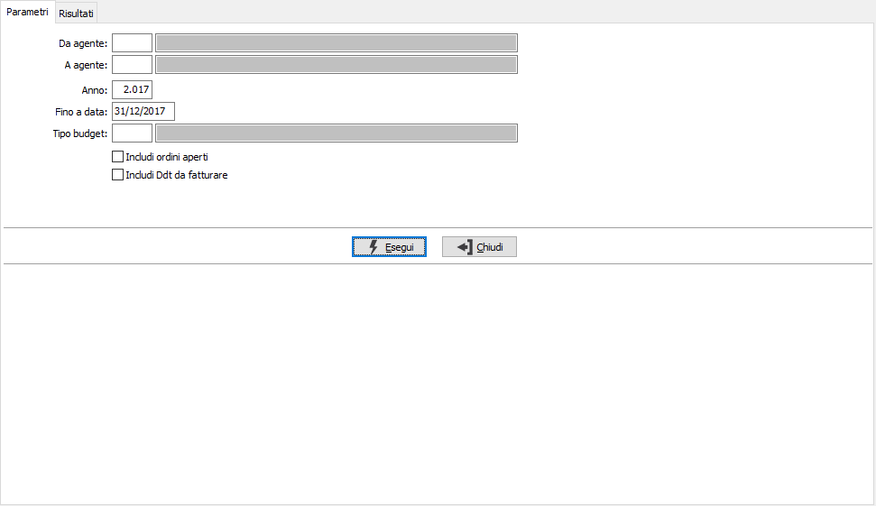
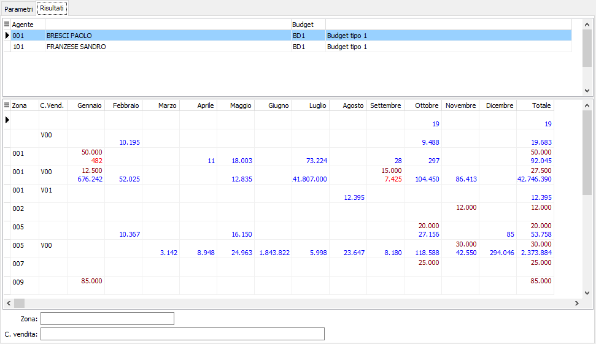

Raffronto budget
Il programma permette di confrontare gli elementi del budget con le vendite consuntive derivate dalle fatture (ed opzionalmente da DDT non fatturati ed ordini non evasi).

Nei parametri di selezione è possibile impostare gli agenti, l'anno, una data massima di selezione ed il tipo di budget; questi parametri saranno utilizzati per la ricerca sia dei valori preventivi che dei consuntivi (fatture); è inoltre possibile includere nell'elaborazione anche gli ordini ancora da evadere e le fatture ancora da contabilizzare spuntando le relative caselle.

Una volta impostati i criteri di selezione viene presentato l’elenco degli agenti/budget: per ognuno vengono visualizzati, in base ai criteri di raggruppamento del tipo di budget, i valori per mese (nel caso di budget annuale il valore preventivo viene frazionato in 12esimi); i valori preventivi vengono visualizzati in colore marrone, i valori consuntivi in blu se superiori ai preventivi ed in rosso se inferiori. Dalla pagina Risultati, tramite i pulsanti presenti nella Toolbar sarà possibile effettuare la stampa.